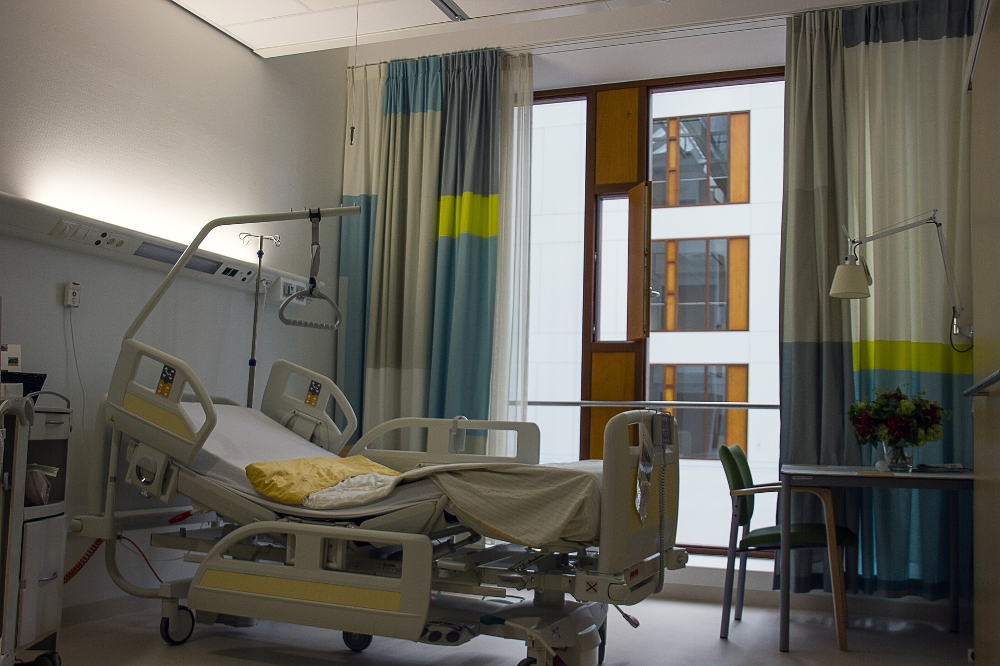

1 / 4

Caption Text
2 / 4

Caption Two
3 / 4

Caption Three
4/ 4
Caption four
|
SWACH Hospitals provides quality medical service with a human touch and strict adherence to medical ethics in a patient-driven environment. The CARE Hospitals Group abides by the principle of not refusing care even to those who cannot afford it. The hospital provides specialty medical services in Cardiology, Cardiothoracic Surgery, Paediatric Cardiology, Paediatric Cardiothoracic Surgery, Neurology, Neurosurgery, Nephrology, Urology, etc. The in-patient services include intensive care, cardiac care, neurological care, paediatric care, medical care, as well as surgical, diagnostic and emergency services In 2008 SWACH Hospitals, ahmedabad, set up an exclusive Trauma Care Centre, delivering care in the following specialties: Trauma Care, Neuro & Spinal Surgery, Orthopedics, ENT, Internal Medicine, Plastic Surgery, Critical Care, Nephrology/Dialysis and Physiotherapy. The hospital has state-of-the-art equipment and is managed by full-time consultants, who have received training at reputed institutions in India and abroad. The hospital also has well-qualified and trained paramedical, nursing and support staff. The Trauma Care Centre is located strategically in the heart of the city, within 2-3 km of the RTC bus complex and the railway station. The SWACH Outpatient Centre offers a wide array of super specialty services at a dedicated facility optimized for outpatient consultation. One of the highlights is ambulatory or day care surgery services, where post-operative observation is uneventful. Such surgeries have become possible due to improved technology and are an accepted method of treatment for many patients, where overnight hospital stay is not required. The SWACH Outpatient Centre is closely integrated with the Group’s flagship in-patient super specialty hospital (with regular shuttle services available), preserving the critical hospitalization link for offering complete and comprehensive care to patients. |
ADDRESS:Science City Rd, Science City, contact:Tel: 040-81656565 For Emergency:Call: 040-81656565 For Appointments:Call: 040-81656565 |